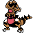

#056
Krokorok
GroundDark
Abilities: Intimidate, Moxie, Anger Point
Base stats BST 351
HP60
Attack82
Defense45
Speed74
Sp. Atk45
Sp. Def45
Evolution
Evolves from Sandile — Level 29
Level-up learnset
LevelMoveType
Lv. 1Hone ClawsDark
Lv. 1LeerNormal
Lv. 1Sand AttackGround
Lv. 12Scary FaceNormal
Lv. 15BiteDark
Lv. 18TormentDark
Lv. 21DigGround
Lv. 24SwaggerNormal
Lv. 27CrunchDark
Lv. 32SandstormRock
Lv. 35Foul PlayDark
Lv. 42EarthquakeGround
Lv. 47ThrashNormal
Wild locations
Not found in the parsed wild encounter tables.